Hi, I'm Connor! I'm a student-athlete at University of California: Santa Cruz studying Applied Mathematics, but I have worked in Game Design, Computer Science, and Biotechnology.
This portfoio is home to a showcase of some of my favorite projects I've worked on, from games I've prototyped, cars I've worked on, and tools I've built. You can find more of my Computer Science work on my resume, LinkedIn, and Github.
Text-Based RPG System
Night City: Legends, claudeRPG Supers, and Artificially Intelligent Roleplaying Systems
I've been playing Tabletop RPGs, or TTRPGs, since I was in first grade. In many ways, the systems are the foundation of modern video games, and I've studied this player versus Game Master format for over a decade and a half. I've decided a couple of times to write my own system, to varying degrees of success, but the standout came when I decided to write a system that you could play by yourself.
Night City: Legends is a system inspired by the Cyberpunk 2077 videogame, which in turn was inspired by the Cyberpunk 2020 TTRPG system. Where many TTRPGs rely on a GM, or Game Master to tell a story, I wanted to write a bot to automate as many functions as possible, with the hope that eventually a solo player could play through an adventure that followed a set of rules. This idea was one that I had long before the popularization of generative AI, so the early version was a Discord bot called "Scavengerbot" with very simple functions like creating random character attributes, roll dice, and search "chests" for random drops. Later iterations, ideally, would have an AI model that could run adventures, but at the time, that technology simply did not exist.
This project was restarted in December of 2025, but went in a much more complex direction. In the playtests, Night City: Legends was a relatively simple system that revolved around your character going on adventures, installing cyberware, and trying not to go insane from psychological strain. The revised system was an effort to create a superhero RPG system echoing Dungeons and Dragons and Steve Jackson's GURPS. It was far more complex in terms of character creation and mechanics, but uniquely, used a generative AI model to read the core rulebook and fill in the blanks during play. You create a character, type what you want to do, and the AI will play with you according to the rules. If you run into a situation that rules haven't been written for, the AI will fill in the blank on the fly and save it to your local game rules for later on. It's incredibly fun, even if most generative AI is still incredibly prone to hallucinations.
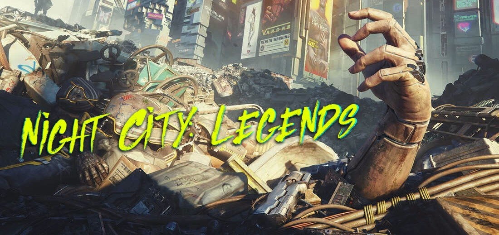
Comics, Films and Animations
Animations, social media, athletic recruitment, and stage combat
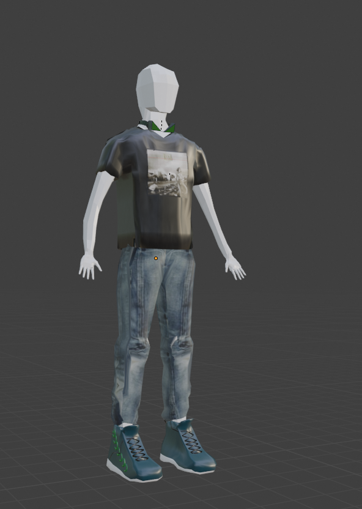
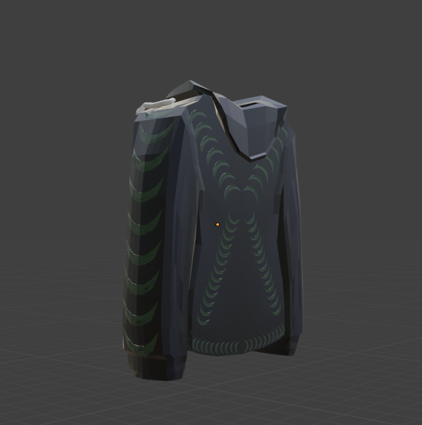
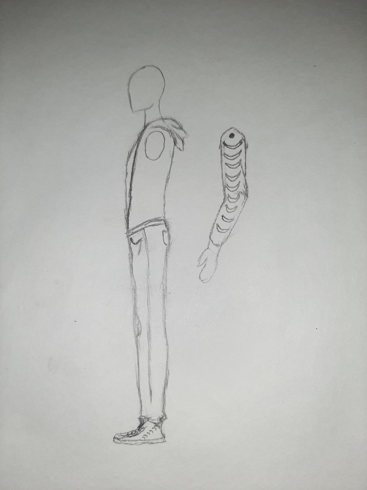
About
Before I was in Applied Mathematics, I was a game designer, which is a field that encompasses a lot of different disciplines. I got my start in game design through amateur animations, which I mostly did to study fight choreography and the way bodies move through space, which is a huge thematic throughline in a lot of my projects. The animations are somewhat crude, even though most of them were made in twenty-four hours or less, and I was limited by a computer that could only yield two frames per second, even in prerendered footage in Blender. Below are some of these crude animations circa 2023.
I also have some photo editing, social media, and video experience. I've been making films since I was a very little boy, and I have written, directed, acted in, and most importantly edited a litany of projects both in an organized academic setting and on my own for almost fifteen years. I have run the social media accounts of multiple organizations, but the most notable was my time at Sunset Comix, where a huge amount of our sales were done via a livestream platform called Whatnot, which I was the cohost of. I also ran a small personal branding Instagram account in an effort to be recruited for Division 3 Cross-Country, which was mostly short-form content designed to highlight big moments in track and field races. One of those reels is shown here.
Video, Pop Culture, and Film are just generally interesting to me. I write film reviews for a small audience, I help my friends in the UCSC Film department with their projects when I can be useful, and I am the founder of "Inhuman Entertainment", a brand that I run for everything not directly related to engineering and Computer Science in my life, which is to say publishing games, YouTube videos, stage combat demos, and more. Below is some test footage for my SAFD sword fighting certification in 2024 (I can't show the real one).
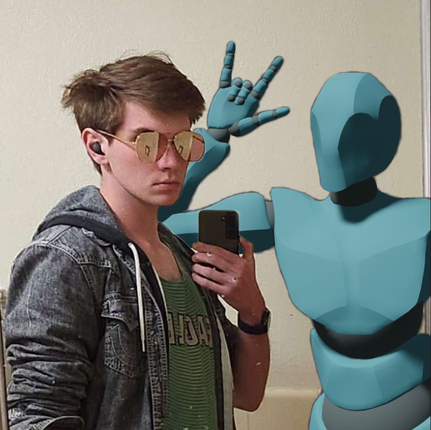
Athletic Recruitment
I used some of my editing skills to make small compilation reels for my own purposes. As a state level student-athlete, I felt that recruitment would be something I was very interested in for my college experience. To try and make this happen, I reached out to college coaches with a series of recruitment letters, all of them pointing back to an Instagram I set up @athlete_connor_dolan. This included very functional Instagram reels that were designed to showcase my progression and occasionally highlight some of my strongest aspects as a runner. I think the reel to the right, which showcases a dominant last lap in the mile race, demonstrates what I was going for with this page.
Contact for Recruitment
FOR ATHLETIC RECRUITMENT INQUIRIES, BE SURE TO EMAIL OR DM ME
Follow my times!Computer Science
Freelance work, Discord bots, AR, and miscellaneous projects
Overview
I've worked on a lot of small projects, some of them much more functional than others. I like to spend a specific amount of time on little ones to try and pick up a new skill, so a lot of them don't end up getting finished, but the ones I have finished are listed below. Here's a small overview of some of the projects and workflows I've had experience with:
- Augmented Reality Experiences from Godot into the Apple Vision Pro via XCode
- Augmented Reality in Unity
- JavaScript, node.js and live JS game engines
Projects
This website was originally made when I was in high school and applying to colleges for game design. I didn't actually know I needed a portfolio when I was applying, and I had so little money that I couldn't host a domain. So, I opened up a GitHub Pages repo on my school-issued Chromebook and started to read the HTML documentation. HTML isn't a hard language by any means; it's barely even a language, but the circumstances of this website's creation were somewhat notable. No school-issued Chromebook will let you use a code editor, and I was on such a time crunch that I could only work on the portfolio during my thirty-minute lunch break and in between periods. So I had to push code I barely understood to the repository each time I wanted to test it, and I could only do it a couple of times before college admissions officers would be looking at it. This project taught me that I could build useful products even without the proper tools, and it was one of the first times that I really had to learn to be adaptable as a developer.
I was hired by Wyrd Games to build an AI tool for their IP, Malifaux, designed to streamline information about the system to onboard new players. This was my first experience with MCP (Model Context Protocol), which is basically a custom-built AI. It ran off a local Ollama build with a Python data processor on top, underneath a React frontend for ease of access. Freelance coding work like that is a really amazing workflow for me, because it allows me to have a hand in a lot of different projects. I've done a few different freelance projects and internships, including some work at Verdant AI, where I did data transfer work on a healthcare database.


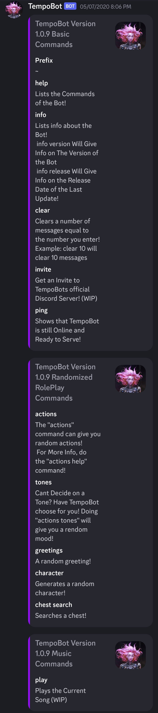
Inhuman
COVID-19 gamedev debut — Unity, C#, custom movement controller
Background
As I began to ease into the world of game development, my first big project was called Inhuman. It was a project I did to satisfy the International Baccalaureate 10th-grade Personal Project. Ultimately, the project ended up being sort of a wreck for all the reasons that junior developers mess up projects. I thought it was important to put in this portfolio to show the mistakes that I've already learned from.
Inhuman was a game that stemmed from a series of short stories, comic books, and animations that I had been writing for over ten years. The goal was to make an online superhero game where you could switch between a huge number of superpowers on the fly while going through a story mode. It was a project I had been thinking about for years and years, and a project that no first-time game developer had any business undertaking.
Inhuman was written in the Unity Engine in C#, and used a completely custom movement controller with hand-made animations. I also made some primitive assets for the story animation. While trying to build something like this was an excellent experience for me that I still draw on ("Inhuman Entertainment" is named for this project), it was still an insane amount of scope creep to have on a project, and I ultimately never finished it. Below you can see some of the early images from the Inhuman development. I hope to go back to it someday after working on some other projects and getting some more experience (see the ongoing "Space Toboggan!"), so I'll refrain from sharing some of the story elements. The current design document is over 40,000 words, which technically classifies it as a novella.
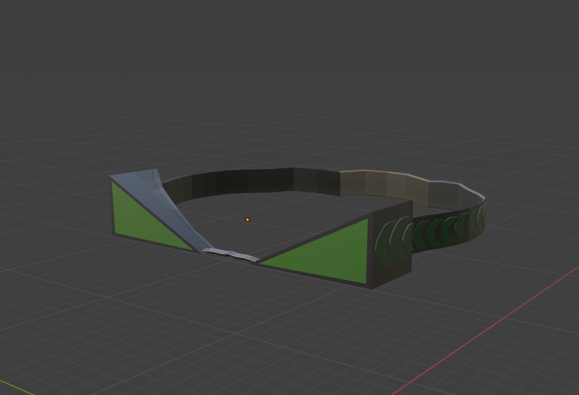


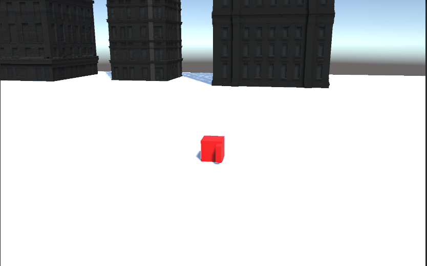
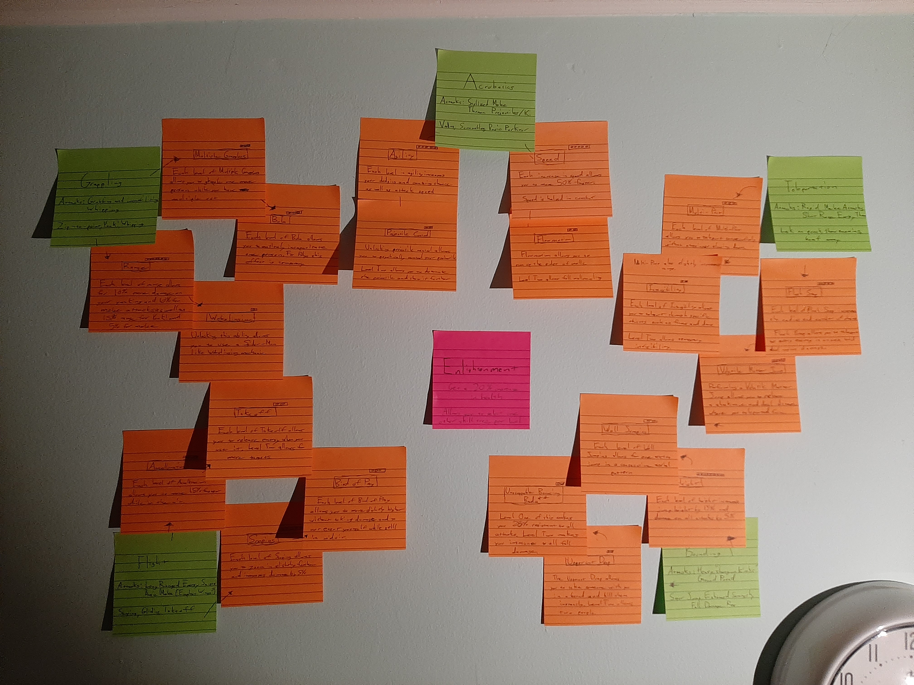
Space Toboggan
Experimental co-op arcade game — ongoing
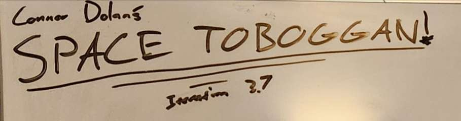
Overview
Space Toboggan! is an experimental arcade game designed to bring players the cooperative experience of the starship Enterprise with the speed of old-school Atari games. Players each inhabit a "role" on the same ship in order to work together, dodging asteroids while attempting to outrun the interplanetary police.
Each of the three roles on your ship is different and equally crucial. The game is designed to challenge the trend in modern gaming of creating solitary experiences by leaning into a hyper-cooperative gameplay loop. Space Toboggan! will be available in two different builds: "At-Home Edition" and "Original".
At-Home Edition
The concept for Space Toboggan comes from two of my favorite games of all time. Artemis Spaceship Bridge Simulator is a game I picked up at a Dungeons and Dragons convention. The game consists of a group of people on local multiplayer, ideally played in a large room like how it was structured at the convention, with each person adopting a role on a spaceship similar to Star Trek. The result is a bunch of people all shouting across the room to each other to work in symbiosis to execute trades, engage in combat, and fly through the stars. As I played, I watched the ship creep across the stage, oftentimes having nothing to do in a specific role. I wondered if there was a way to cut out the fat to make a more engaging experience.

Original
The other massive influence was an arcade game from the 80s, Tempest. Tempest has been perhaps my favorite arcade game of all time since I first found a cabinet in elementary school. I actually played so much that I would get into high score competitions with my boss while I worked in the comic shop. I bought a Tempest shirt and wore it until it was destroyed. I love the game, and I know it well. To explain, Tempest is a shooter game where the player looks down a tube and has to shoot incoming enemies. It's a fast paced game, and when thinking about ways to counter the slow aspects of the Artemis experience, it wasn't long before I thought of Tempest.
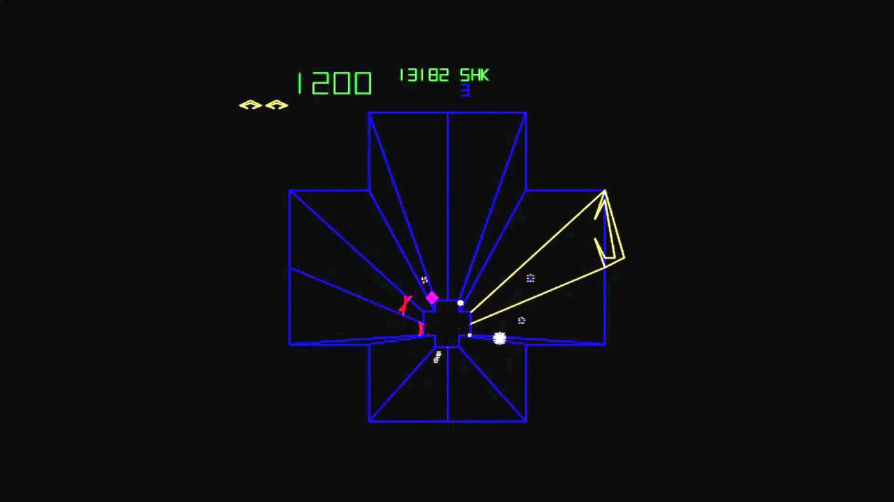
Chute
To approach the piloting aspect of the game, I designed a very small game called "chute" which had a little pilot controller that careened down a procedurally generated tunnel (a chute). This was to prove that I could build a good piloting system and use some procedural generation elements that would come in handy for the arcade elements.
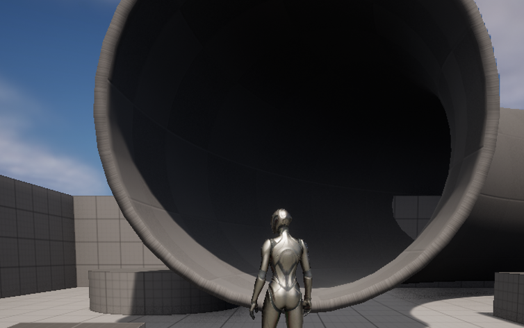
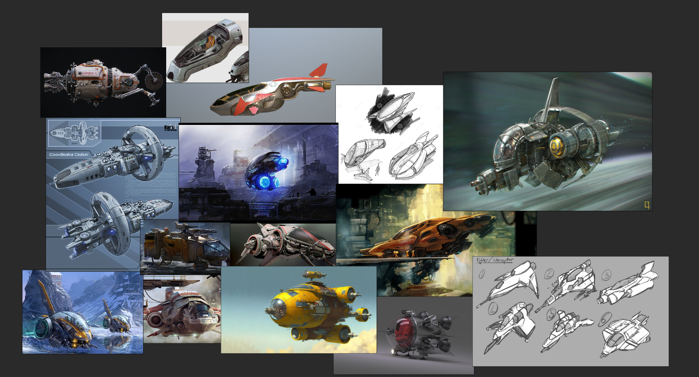
Spinner
To approach the second role, the gunner, I decided to build a game where you sat in a turret and shot at objects in the sky. You could spin the turret around the base for different aim, a proof of concept for the idea I had for the gunner seat where you did something similar attached to the pilot seat.
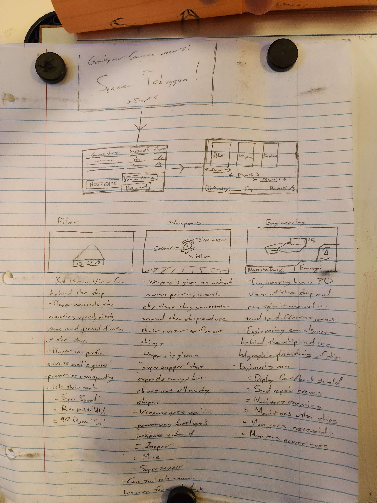
Character Selector
The third "game" I sketched was much less flamboyant but one of the most technically challenging. In order to understand how to make and manage a multiplayer class system, I designed a small game in which you could join a lobby and select a role. That role would simply change the color of your capsule, which had a default first person controller. If someone was already the role you were trying to select, it would show that as well. To create a multiplayer game in which someone selects a role is great practice to expedite implementation in the final product.
Cutscenes and UI/UX
While I was working on the development of these smaller projects, I began to design some UI/UX aspects and commission some art by the same friend who did Inhuman. I have some of the early drafts of my concepts for the art already posted. I also started preproduction for a cutscene that will play before the game, which I decided would be in real life, writing a script and shot list.
Next Steps
In order to launch Space Toboggan successfully, I still need to formally announce the game, which I have been hesitant to do until I can devote some proper time to its completion. Once announced, I will do a fair amount of publicity for it within my budget constraints. After all three of the small games are done, which they are not (Chute is complete and development of Spinner is ongoing), I will implement the systems in the final product which will lay out a solid framework I can iterate on. At that point, a lot of production will be complete.
One of the next big steps for the development of this project is to change the name.
WhereHaveIBeen
Forza Horizon lobby in real life
empty (but don't delete it!)
Project Cars
Turning real wrenches
empty (but don't delete it!)